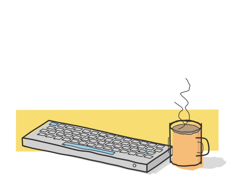

uses

at my desk
- laptop
- a lenovo loq 15. it's the machine everything else is driven from.
- os
- fedora linux.
- editor
- vs code, with the live server extension for this site.
- shell
- bash.
- pair
- claude code, as a pair programmer and a pair sysadmin. every change it makes to the server gets a changelog entry and a rollback, and anything risky needs my yes.
languages
- systems
- rust, go and c.
- data and markets
- python.
- interfaces
- javascript, react and typescript. kotlin for android.
- this site
- html, css and a little javascript. no framework, no build. more in the colophon.
the home server
one box at home, built in october 2026. the full spec, the diagram and what broke are on the homelab page.
- cpu
- intel core i9-14900k, capped at 90 watts sustained.
- memory
- 32 gb ddr4.
- disks
- 1 tb nvme for the system, 2 tb nas hard drive for data.
- hypervisor
- proxmox ve.
what i self-host
- photos and files
- immich and nextcloud, which replaced google photos and drive.
- everyday
- vaultwarden for passwords, paperless-ngx for documents (with tamil and hindi ocr), freshrss, karakeep, n8n, and forgejo for private git.
- watching it
- prometheus, grafana, loki and uptime kuma.
- getting in
- tailscale for admin access, a cloudflare tunnel for public apps.
- backups
- nightly proxmox backups plus a second, deduplicated copy with restic.
- my own things
- d's labs and api.dharun.dev, my free public apis for indian developers.